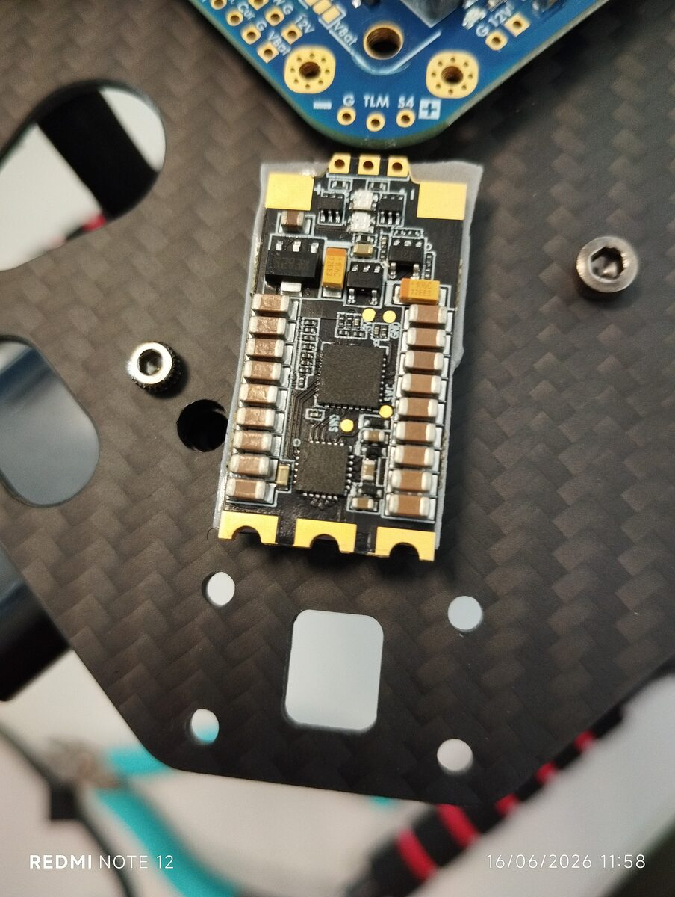
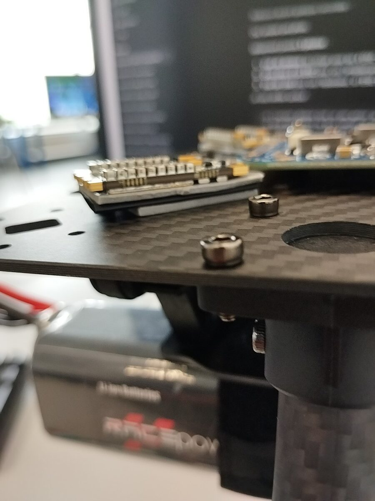
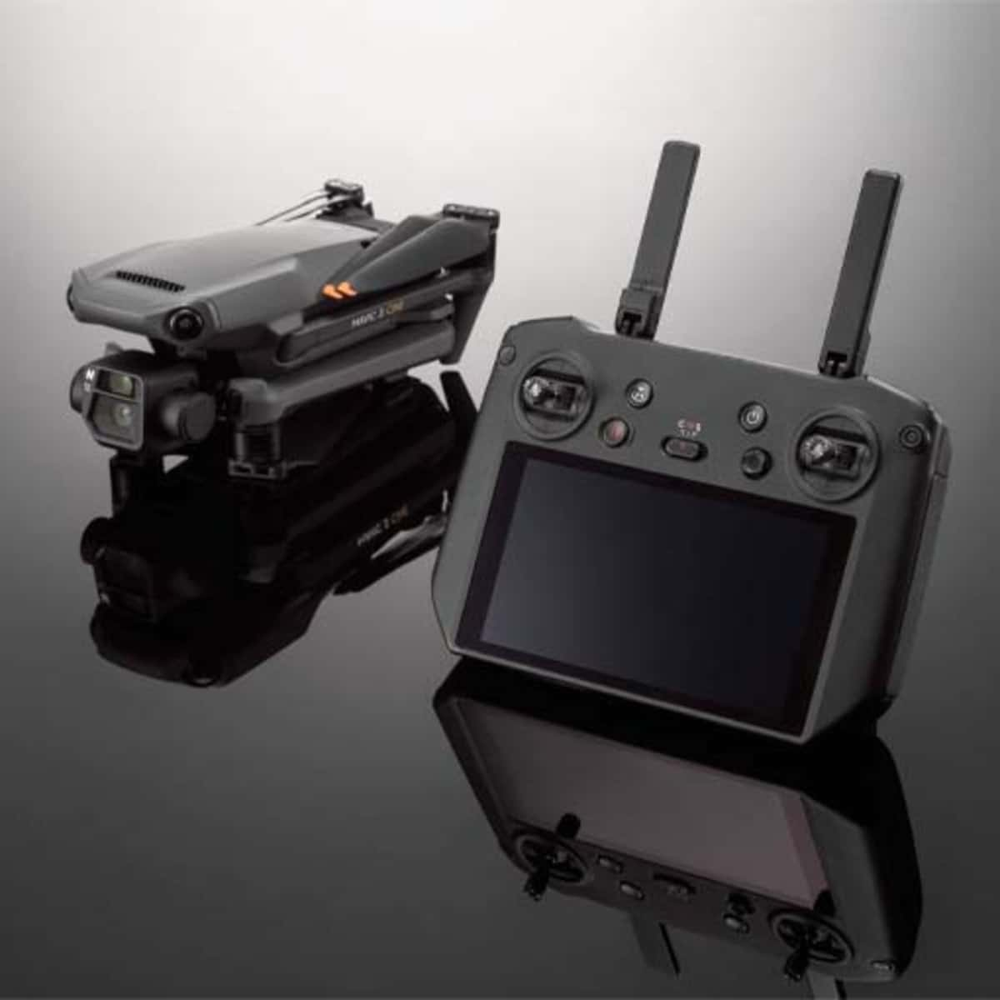

Integration systeme
Comprendre les sous-systemes d'un drone : energie, propulsion, controle, calcul, cameras et communication.
Stage BUT3 - 16 mars au 19 juin 2026
Stage realise a l'Universite de Technologie de Troyes, au sein du LIST3N. ARODE est le cadre global du projet ; mon travail porte sur une contribution ciblee : drone, solution de secours, essais de detection, ajustements ARODE Live et exploration de donnees synthetiques.



01 - Mission principale
La mission principale concerne l'etude et la mise en place d'une architecture drone ouverte. L'objectif est de disposer d'une plateforme plus maitrisable qu'un drone DJI commercial, avec une marge d'evolution vers le traitement embarque.
La plateforme s'appuie sur un chassis Holybro X500 V2, un Pixhawk 6C, une Jetson Orin Nano, une liaison SIYI, des moteurs T-Motor, des ESC Tekko32 F4, une batterie Li-ion 4S, une distribution FCHUB-12S et des protections de cablage.
02 - Solution de secours
En attendant la finalisation de la plateforme X500, une solution de secours a ete mise en place autour du DJI Mavic 2 Pro. Elle permettait de continuer les essais logiciels sans attendre que le drone principal soit totalement operationnel.
Cette solution a servi a tester les flux video, l'exploitation GPS/metadonnees, les exports CSV, l'affichage d'alarmes, le tri des detections et l'integration pratique dans ARODE Live.

03 - Detection IA
Dans le cadre des essais avec la solution de secours et ARODE Live, plusieurs familles de modeles de detection ont ete testees sur des donnees drone. L'objectif etait d'evaluer leur comportement dans une chaine complete, pas seulement leur performance isolee.
Ces essais ont aide a comparer la facilite d'exploitation : qualite des detections, stabilite, vitesse d'inference, format des resultats, synchronisation possible avec GPS/metadonnees et affichage dans l'interface.
04 - Piste exploratoire
Une piste complementaire a consiste a explorer la generation de donnees synthetiques pour ameliorer l'entrainement ou l'evaluation du VLM. L'idee etait de produire des cas varies autour de scenes drone, notamment pour des situations rares ou difficiles a collecter.
La solution n'a pas abouti a une base finale validee. Les limites identifiees concernent le realisme terrain, la coherence visuelle, la perspective, la qualite des masques, le cout de generation et la fiabilite des annotations.
05 - Bilan
Comprendre les sous-systemes d'un drone : energie, propulsion, controle, calcul, cameras et communication.
Verifier tensions, masses, polarites, cablage, sous-ensembles et integration sans bruler les etapes.
Tester des detecteurs, comprendre les sorties, relier les resultats a une interface et identifier les limites des donnees.